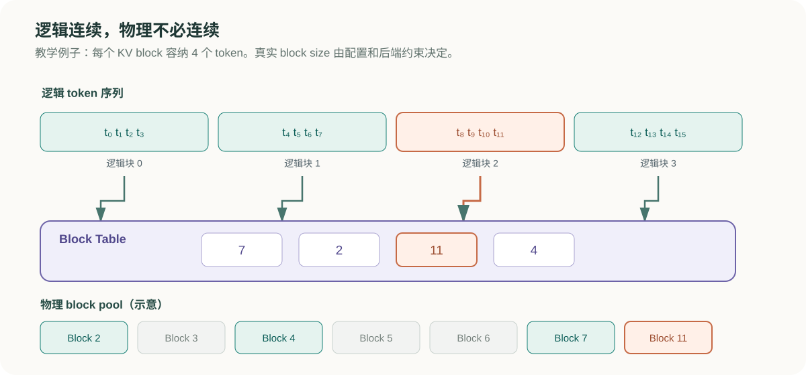

第 03 章 · KV Cache 与内存管理
PagedAttention 上篇：Block Table 与分页管理
一条请求的 KV Cache 会随着生成不断增长。如果它必须放在一整块连续显存里，系统就很难灵活地接纳长短不一的请求。PagedAttention 的关键想法，是让逻辑连续的缓存可以映射到物理上分散的块。
先想象一个在线服务：请求 A 预计会生成 2,000 个 token，请求 B 可能只生成 80 个 token，请求 C 的长度暂时未知。系统如果一开始就为每个请求预留很大的连续空间，会浪费不少显存；如果预留得太小，又可能在生成过程中不够用。PagedAttention 要解决的正是 KV Cache 动态分配与访问的问题。
读完这一章，你应该能够
- 区分内部碎片与外部碎片，并解释动态长度请求为什么难管理。
- 解释逻辑块、物理块和 Block Table 各自的职责。
- 给定 token 位置和 block size，算出物理块 ID 与块内偏移。
- 说明分页方案减少了什么浪费，以及它没有解决哪些问题。

3.1 连续分配为什么会浪费？
KV Cache 的大小不是请求开始时就完全确定的。Prompt 长度已知，但生成多少 token 通常要等模型运行后才能知道。若系统按最大长度预留连续空间，实际输出较短时，预留空间就没有被使用；若系统按较短长度分配，后续扩容又可能需要搬移数据或寻找更大的连续区域。
这里要区分两种碎片：
- 内部碎片：分配给某个请求的空间比它实际使用的更多，空余部分被困在这次分配内部。
- 外部碎片：空闲空间分散成多个小区域；总空闲量可能足够，但不容易找到满足连续分配要求的大区域。
对于动态增长的 KV Cache，预分配策略需要在“提前多留空间”和“运行时扩容”之间取舍。请求越多、长度差异越大，越需要更灵活的内存组织方式。
3.2 分页类比：逻辑地址与物理地址分开
操作系统的虚拟内存分页提供了一个有用的类比：程序看到的是连续的虚拟地址空间，底层页表再把虚拟页映射到物理页。物理页不必连续，程序也不需要知道每一页在内存条中的实际位置。
PagedAttention 借用了这个“逻辑连续、物理可分散”的思路。对于 KV Cache，可以把 token 序列按固定 token 数切成逻辑块；Block Table 记录每个逻辑块对应的物理 block ID。注意，这只是帮助建立直觉的类比：GPU KV Cache 的布局、访问方式和操作系统虚拟内存并不完全相同。
| 概念 | 分页内存类比 | Paged KV Cache |
|---|---|---|
| 逻辑单元 | 虚拟页 | 逻辑 KV block |
| 物理单元 | 物理页 | 物理 KV block |
| 映射结构 | 页表 | Block Table |
| 分配方式 | 按页分配 | 按 block 分配 |
| 访问过程 | 地址转换后访问物理页 | 通过块映射定位 K/V 数据 |
3.3 Block Table 如何把 token 位置映射到物理块？
用一个小例子计算。假设教学示例中的 block size 为 4，也就是每个物理块最多保存 4 个 token 的 KV 数据。某条请求的 Block Table 是：
Block Table = [7, 2, 11, 4]
逻辑块 0 → 物理块 7
逻辑块 1 → 物理块 2
逻辑块 2 → 物理块 11
逻辑块 3 → 物理块 4现在要访问逻辑 token 位置 t=9。首先求它属于第几个逻辑块，再求它在块内的偏移：
t = 9, block_size = 4
logical_block = floor(9 / 4) = 2
offset = 9 % 4 = 1
physical_block = BlockTable[2] = 11
所以：逻辑 token 9 → 物理 Block 11 的 offset 1这就是映射表的价值：请求看到的 token 顺序没有改变，但底层可以把每个逻辑块放到任意可用物理块中。Attention kernel 根据请求的块映射访问正确的 K/V 数据。
交互观察：访问 token 9 的地址转换
9 ÷ 4 = 2 余 1。token 9 属于逻辑块 2。
BlockTable[2] = 11。逻辑块 2 对应物理块 11。
offset = 1。最终访问物理 Block 11 内的第 1 个 token 槽位（按从 0 开始计数）。
3.4 按需分配：请求增长时再拿新的 block
在分页方案中，请求不需要一开始就拿到覆盖最大输出长度的整段连续空间。系统可以从 block pool 中取出当前需要的块；当已有块用满、请求继续增长时，再分配新块并更新该请求的映射关系。
- 新请求进入调度器，系统计算当前需要的 KV block 数。
- KV Cache 管理器从空闲块池分配物理块，并建立请求对应的 Block Table。
- 模型执行时，K/V 数据写入分配好的物理块；Attention 读取时依据映射找到对应块。
- 请求结束后，释放不再被引用的块，归还到可复用的块池。
最后一个 block 可能没有填满。例如 block size 为 4，而当前请求只用了 10 个 token，那么它需要 3 个逻辑块，最后一块只使用 2 个槽位。这个尾部空位属于该方案下可预期的内部浪费。
3.5 分页方案减少了什么？又没有解决什么？
由于一个请求的逻辑块可以映射到不同的物理块，KV Cache 的分配不再要求找到一段足够大的连续显存。因此，块池层面由“连续区域必须足够大”引起的外部碎片问题会大幅缓解；按块分配也让系统可以随着请求增长逐步增加缓存容量。
但不能把它描述成“所有显存碎片都消失了”或“显存利用率永远是 96%”。最后一个未填满的块仍可能有内部空位；模型权重、激活、CUDA 工作区、内存对齐和其他 GPU 进程仍然占用显存。不同模型、block size、缓存布局和运行负载也会产生不同结果。
边界提醒：Paged KV Cache 解决的是 KV 缓存的块级组织与访问问题，不意味着 GPU 上所有分配都变成了分页，也不保证请求永远不会因为 KV Cache 容量不足而排队或被抢占。
3.6 Block Size 是一个工程取舍
块越小，尾部未使用空间的上限通常越小，但同样数量的 token 会对应更多 block 和更多映射元数据；块越大，映射项相对少一些，但最后一个块可能留下更多未使用槽位。实际可选范围还受 vLLM 版本、硬件、模型和 Attention backend 限制，不能把某个示例值说成所有环境的固定默认值。
还要记住：PagedAttention 不只是“把张量切成小块”。实现必须让写入路径知道新 token 应写入哪个物理槽位，也必须让读取路径能按请求的逻辑顺序遍历物理块。下一章会继续拆解 Block Table、slot mapping、Attention backend 和块共享之间的关系。
参考资料
- Kwon et al., Efficient Memory Management for Large Language Model Serving with PagedAttention，PagedAttention 原始论文。
- vLLM, Paged Attention Design，Attention kernel 对分页 KV 数据的访问实现。
- vLLM, Cache Configuration Reference，当前缓存配置和 block size 参数。
图中的 block size = 4、Block Table = [7, 2, 11, 4] 均为教学示例，不是 vLLM 的默认配置或真实运行日志。